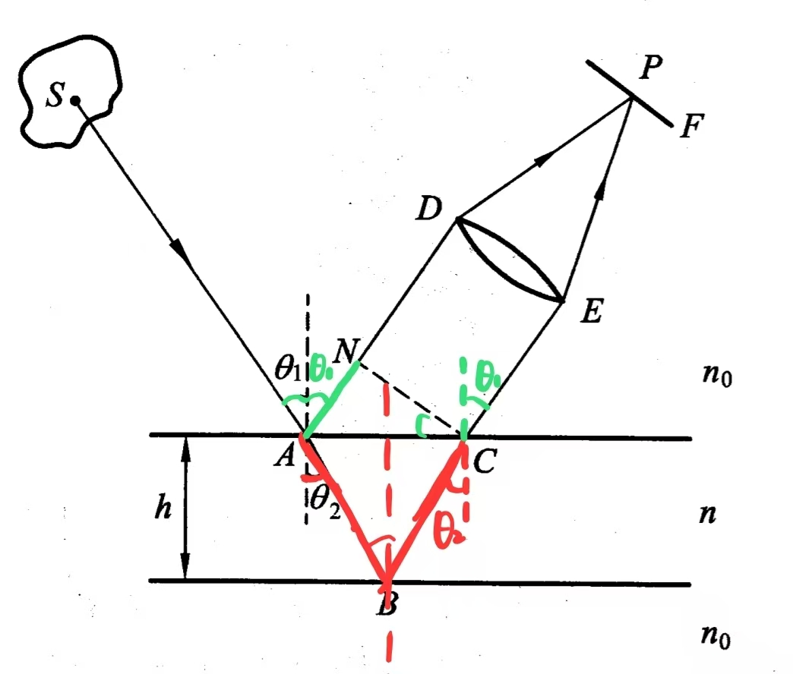

光的干涉
干涉
两束或多束光在空间相遇时，在重叠区内形成稳定的强弱分布的现象.
干涉光光强
当\(\cos\phi = 1\)时，光强最大；当\(\cos\phi = -1\)时，光强最小.
| $$\phi$$ |
$$I$$ |
| $$\phi = 2m\pi~m = 0, \pm1, \pm2, \cdots$$ |
$$I_{max} = I_1 + I_2 + 2\sqrt{I_1I_2}\cos\theta$$ |
| $$\phi = 2(m+1)\pi~m=0,\pm1 , \pm2, \cdots$$ |
$$I_{min} = I_1 + I_2 - 2\sqrt{I_1I_2}\cos\theta$$ |
\(m\)称为干涉级次.
干涉条纹可见度
用于表征干涉效应程度的量.
$$V = \frac{I_{max} - I_{min}}{I_{max} + I_{min}}$$
\(I_{min} = 0\)时，\(V = 1\)，两束光完全相干，条纹最清晰.
\(I_{max} = I_{min}\)时，\(V = 0\)，两束光完全不相干，无干涉条纹.
\(0\lt V\lt 1\)时，两束光部分相干，条纹清晰度一般.
相干条件分析
1、两光束频率相同（\(\omega_1 = \omega_2\)）
为了得到稳定的干涉条纹分布，干涉光强不应随时间变化，即\(\omega_1 - \omega_2 = 0\).
2、两光束振动方向相同（\(\theta = 0\)）
$$V = \frac{I_{max} - I_{min}}{I_{max} + I_{min}} = \frac{4\sqrt{I_1I_2}\cos\theta}{2I_1 + 2I_2}$$
\(I\)一定时，\(\theta\)越大，干涉条纹越清晰，当\(\theta = 0\)时，干涉条纹最清晰.
3、两光束初相位差恒定（\(\phi_2 - \phi_1\)恒定）
为了保证光强\(I\)不发生变化.
相干光波
满足相干条件的光波.
相干光源
能够产生相干光波的光源.
普通光源是非相干光源.
激光器是相干光源.
杨氏双缝干涉
光程差
\(d\ll D, R_1 = R_2\)时：
相位差
$$\phi = kr = \frac{2\pi}{\lambda}\Delta = \frac{2\pi}{\lambda}\frac{dy}{D}$$
|
$$\phi$$ |
$$y$$ |
| 亮条纹 |
$$\phi = 2m\pi(m=0,\pm1,\pm2,\cdots)$$ |
$$y = m\frac{D\lambda}{d}(m=0,\pm1,\pm2,\cdots)$$ |
| 暗条纹 |
$$\phi=(2m + 1)\pi(m=0,\pm1,\pm2,\cdots)$$ |
$$y = (m+1)\frac{D\lambda}{d}(m=0,\pm1,\pm2,\cdots)$$ |
光束汇聚角
$$w = \frac{d}{D}$$
条纹间距\(\epsilon\)
$$\epsilon = y_{m+1} - y_m = \frac{D\lambda}{d} = \frac{\lambda}{w}$$
非定域干涉
在整个光波叠加区内随处可见干涉条纹的干涉.
定域干涉
在整个光波叠加区内干涉条纹不随处可见的干涉.
补充
当用白光进行干涉实验时，除\(m=0\)的条纹仍是白光外，其他级次的干涉条纹均为不同颜色分离的彩色条纹.
$$\phi = \frac{2\pi}{\lambda}\frac{dy}{D} = 2m\pi$$
当\(m=0\)时，\(\phi=0\)与\(\lambda\)无关.
当\(m\neq 0\)时，由于\(\phi=2m\pi\)一定，\(y\)越大的位置\(\lambda\)越大.
平行平板干涉（薄膜干涉）分析

半波损失分析
设平行平板上方介质折射率为\(n_1\)，下方介质折射率为\(n_2\).
| 情况 |
分析 |
结论 |
$$\Delta$$ |
| $$n_1 \lt n \gt n_2$$ |
两束反射光中总有一支发生半波损失. |
存在半波损失，即存在附件光程差. |
$$\Delta = 2nh\cos\theta_2 + \frac{\lambda}{2}$$ |
| $$n_1 \gt n \lt n_2$$ |
| $$n_1 \lt n \lt n_2$$ |
两束反射光均不发生半波损失. |
不存在半波损失，即不存在附加光程差. |
$$\Delta = 2nh\cos\theta_2$$ |
| $$n_1 \gt n \gt n_2$$ |
光程差
考虑常见的\(n_0 \lt n \gt n_0\)模型
相位差
$$\phi = kr = \frac{2\pi}{\lambda}\Delta = \frac{2\pi}{\lambda}(2nh\cos\theta_2 + \frac{\lambda}{2})$$
|
$$\phi$$ |
$$\Delta$$ |
| 亮条纹 |
$$\phi = 2m\pi(m = 0, \pm1, \pm2, \cdots)$$ |
$$\Delta = m\lambda(m = 0, \pm1, \pm2, \cdots)$$ |
| 暗条纹 |
$$\phi = 2(m + 1)\pi(m = 0, \pm1, \pm2, \cdots)$$ |
$$\Delta = (m + 1)\lambda(m = 0, \pm1, \pm2, \cdots)$$ |
一般情况下，平行平板的折射率\(n\)与厚度\(h\)以及光波长\(\lambda\)均为常数，故光程差仅取决于折射角\(\theta_2\)，而其又由入射角\(\theta_1\)所决定，故：
具有相同入射角的光经平板两表面反射所形成的反射光在其相遇点处具有相同的光程差，即位于同一条纹上，为等倾干涉条纹.
等倾干涉
凡入射角相同的光处于同一干涉条纹上，称这种干涉为等倾干涉，对应的干涉条纹为等倾干涉条纹.
反射光的等倾干涉圆条纹
实验装置
透镜光轴垂直于平行平板G，S为一扩展光源，其发出的光线经半反射镜M后，以各种角度入射到平行平板G上.
等倾圆环的特点
等倾圆环的干涉级数
愈接近等倾圆环中心的条纹，其对应的入射角越小，从而对应的折射角\(\theta_2\)越小，由平行平板干涉的光程差公式：\(\Delta = 2nh\cos\theta_2 (+ \frac{\lambda}{2})\)，相对应的光程差\(\Delta\)越大，干涉条纹级数也越高；距离圆环中心越远的条纹，干涉级数越小.
设中心点的干涉级数为\(m_0\)：
$$\Delta_0 = 2nh(+\frac{\lambda}{2}) = m_0\lambda$$
$$m_0 = \frac{2nh}{\lambda}(+\frac{1}{2})$$
\(m_0\)不一定为整数，即中心未必时是最亮点，故常将\(m_0\)写作：
$$m_0 = m_1 + \epsilon(0\lt \epsilon\lt 1)$$
等倾亮圆环对应的入射角及半径
第\(N\)个亮环对应的入射角\(\theta_{1N}\)为：
由中心向外计算，第\(N\)个亮环的半径为：
该式说明，平行平板越厚，等面积内的圆环数量越多.
等倾圆环相邻亮条纹的间距
$$e_N = \frac{f}{2n_0}\sqrt{\frac{n\lambda}{h(N-1+\epsilon)}}$$
$$\begin{align}
e_N &= r_{N+1} - r_N\\
\end{align}$$
该式说明，越靠近边缘（即\(N\)越大），条纹越密集（间距越小）.
透射光的等倾干涉圆条纹
透射光的等倾干涉不存在半波损失.
楔形平板
上下平面具有微小夹角的平板.
劈尖
一种特殊的楔形平板，厚度可以在某处为0.
等厚干涉
干涉条纹与楔形平板厚度一一对应的干涉，相应的干涉条纹称为等厚条纹.
等厚干涉（楔形平板干涉）
楔形平板的光程差精确值一般很难计算，通常来说，楔形平板厚度不大，楔角也很小，因此可以近似利用平行平板光程差公式表示：
$$\Delta = 2nh\cos\theta_2$$
考虑常见的\(n_0-n-n_0\)情况，光束在楔形平板表面产生半波损失，两表面反射光光程差为：
$$\Delta = 2nh\cos\theta_2 + \frac{\lambda}{2}$$
条纹亮度分析
$$\phi = kr = \frac{2\pi}{\lambda}\Delta$$
|
$$\phi$$ |
| 亮条纹 |
$$\phi = 2m\pi(m = 0,\pm1, \pm2, \cdots)$$ |
| 暗条纹 |
$$\phi = 2(m+1)\pi(m=0,\pm1,\pm2,\cdots)$$ |
垂直入射楔形板产生干涉的系统
相邻亮条纹间厚度差
垂直入射劈尖形成的干涉
垂直入射\(Rightarrow \theta_2 = \theta_1 = 0\)
亮线位置：
$$2nh + \frac{\lambda}{2} = m\lambda(m=1,2,\cdots)$$
暗线位置：
$$2nh + \frac{\lambda}{2} = (m + \frac{1}{2})\lambda(m=0,1,2,\cdots)$$
棱线总位于暗条纹的位置.
若劈尖上有\(N\)个条纹，则对应的总厚度为：
$$d = N\frac{\lambda}{2n}$$
其中，\(N\)可以为整数，也可以为小数.
劈尖表面上的亮条纹是等距离的，条纹间距\(\Delta L\)为：
$$\Delta L = \frac{\Delta h}{\sin\alpha} = \frac{\lambda}{2n\sin\alpha}$$
牛顿环
 形状特点
形状特点
在空气层上形成一组以接触点O为中心的中间疏、边缘密的圆环条纹.
内圈干涉级数小、外圈干涉级数大.
相干条件
$$2d + \frac{\lambda}{2} = \begin{cases}k\lambda, k=1,2,\cdots 明条纹\\(2k + 1)\frac{\lambda}{2},k=0,1,2,\cdots 暗条纹\end{cases}$$
$$r^2 = R^2 - (R-d)^2 = 2dR - d^2$$
$$\because R \gg d$$
$$\therefore r^2 = 2dR \Rightarrow d = \frac{r^2}{2R}$$
明条纹半径：
$$2\cdot\frac{r^2}{2R} + \frac{\lambda}{2} = k\lambda \Rightarrow r = \sqrt{\frac{(2k-1)R\lambda}{2}}, k=1,2,\cdots$$
暗条纹半径：
$$2\cdot\frac{r^2}{2R} + \frac{\lambda}{2} = (2k + 1)\frac{\lambda}{2} \Rightarrow r = \sqrt{kR\lambda}, k=0,1,2,\cdots$$
相邻明条纹厚度差
$$2d + \frac{\lambda}{2} = k\lambda \Rightarrow d_k = \frac{1}{2}(k\lambda - \frac{\lambda}{2})$$
$$\Delta d = d_{k+1} - d{k} = \frac{\lambda}{2}$$
光学薄膜
单层膜的反射率
$$R = \left|\frac{E_{0r}}{E_{0i}}\right|^2 = \frac{r_1^2 + r_2^2 + 2r_1r_2\cos\phi}{1 + r_1^2r_2^2 + 2r_1r_2\cos\phi}$$
其中\(r_1\)为薄膜上表面反射系数，\(r_2\)为薄膜下表面反射系数，\(\phi\)为相邻两个出射光束间的相位差.
$$\phi = \frac{4\pi}{\lambda}n_1h\cos\theta_1$$
当光正入射到薄膜上时，薄膜两表面的反射系数分别为：
$$r_1 = \frac{n_0 - n_1}{n_0 + n_1}$$
$$r_2 = \frac{n_1 + n_2}{n_1 - n_2}$$
对于给定的基片和介质膜，\(n_0, n_2\)为常数，因此可以得到\(R\)随\(\phi\)即随\(n_1h\)变化的规律.
\(n_1 = n_0\)或\(n_1 = n_2\)时，\(R\)与未镀膜时的反射率\(R_0\)一致.
\(n_1\gt n_2\)时：
$$r_1 = \frac{n_0 - n_1}{n_0 + n_1} \lt 0$$
$$r_2 = \frac{n_1 - n_2}{n_1 + n_2} \gt 0$$
由分式的浓度不等式：
$$R = \frac{r_1^2 + r_2^2 + 2r_1r_2\cos\phi}{1 + r_1^2r_2^2 + 2r_1r_2\cos\phi}$$
\(\cos\phi = -1\)时，R有最大值.
$$\phi = \frac{4\pi}{\lambda}n_1h\cos\theta_1 = (2m+1)\pi$$
$$n_1h = \frac{(2m+1)}{4}\lambda$$
\(\cos\phi = 1\)时，\(R\)有最小值：
$$\phi = \frac{4\pi}{\lambda}n_1h\cos\theta_1 = 2m\pi$$
$$n_1h = \frac{m}{2}\lambda$$
Bottom